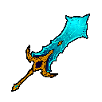
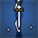

Warrior
Close-range fighter who grows with Strength, Vitality and speed. At level 15 you pick one of three combat styles. Every Warrior shares the skills below.
Base stats
STR 10VIT 5
Stat growth per level
STR x1.25VIT x1.25INT x0.5DEX x0.75
Starter kit
 Potion of Healing x5, 10 bread, Bamboo Dragonscale Ring
Potion of Healing x5, 10 bread, Bamboo Dragonscale Ring
The three paths

Duelist
Speed and evasion · 18 skills
Dexterity speed path. Uses swords, daggers, katanas, and fists.

Reaver
Raw damage · 17 skills
Strength damage path. Uses longswords, dual swords, and twinblades.
Paladin
Defence and holy power · 14 skills
Defensive Vitality path. Uses axes, greatswords, and hammers.
Shared Warrior skills 3
| Skill | Lv | Type | Ranks | Needs |
|---|---|---|---|---|
 Step Slide a short distance in the direction a player is moving. Evades all incoming attacks. | 3 | Epic skill | 1 | - |
 Guard Right-click to guard against frontal attacks. Continued guarding will consume more stamina. | 5 | Epic skill | 1 | - |
 Roll Roll in the direction a player is moving. Evades all incoming attacks. | 15 | Epic skill | 1 | - |
Data comes from the live Arvan server and updates when the wiki is rebuilt. Spotted a mistake? Tell us on GitHub.